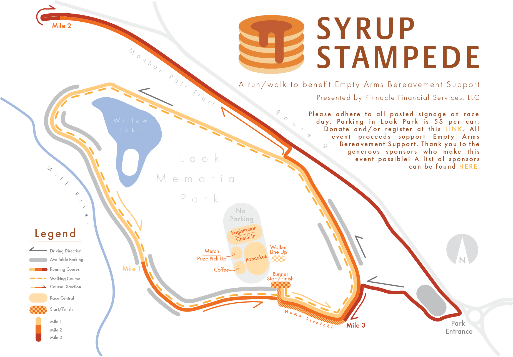

Stampede Map
Event map for the Syrup Stampede run/walk at Look Memorial Park, showing the race course, parking, the start/finish area, and key park landmarks including Willow Lake and the Mill River, with a legend and compass rose.

Event map for the Syrup Stampede run/walk at Look Memorial Park, showing the race course, parking, the start/finish area, and key park landmarks including Willow Lake and the Mill River, with a legend and compass rose.